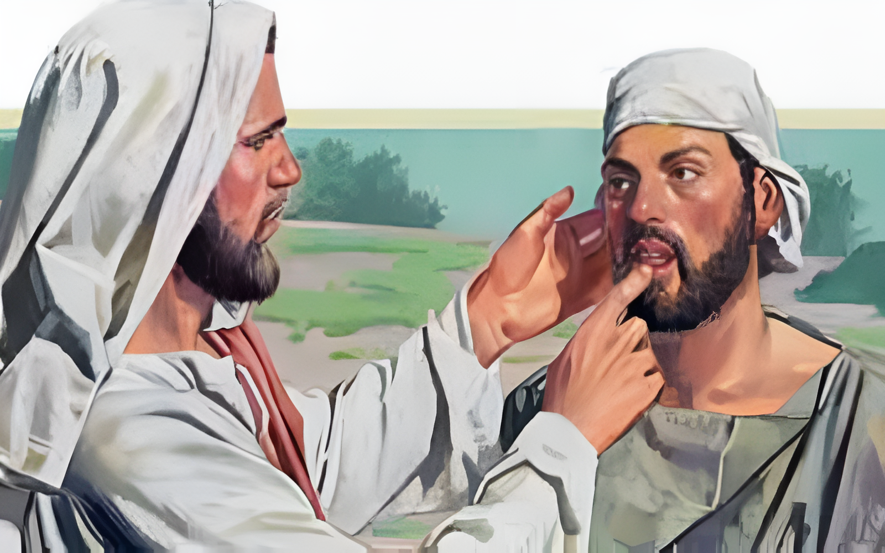

Lord Jesus Heals A Deaf Man
And again, departing from the coasts of Tyre and Sidon, he came unto the sea of Galilee, through the midst of the coasts of Decapolis.
And they bring unto him one that was deaf, and had an impediment in his speech; and they beseech him to put his hand upon him.
And he took him aside from the multitude, and put his fingers into his ears, and he spit, and touched his tongue;
And looking up to heaven, he sighed, and saith unto him, Ephphatha, that is, Be opened.
And straightway his ears were opened, and the string of his tongue was loosed, and he spake plain.
And he charged them that they should tell no man: but the more he charged them, so much the more a great deal they published it;
And were beyond measure astonished, saying, He hath done all things well: he maketh both the deaf to hear, and the dumb to speak.
Mark 7:31-37
- 